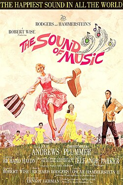

The Sound of Music
38th Academy Awards
(Oscars 1966)
10 Nominations, 5 Awards
| Nominations | ||
|---|---|---|
| Category | Nominees | Result |
| Best Picture | Robert Wise | Won |
| Actress | Julie Andrews | Nominated |
| Actress in a Supporting Role | Peggy Wood | Nominated |
| Directing | Robert Wise | Won |
| Cinematography (Color) | Ted McCord | Nominated |
| Film Editing | William Reynolds | Won |
| Art Direction (Color) | Boris Leven, Ruby Levitt, and Walter M. Scott | Nominated |
| Costume Design (Color) | Dorothy Jeakins | Nominated |
| Sound | Fred Hynes and James P. Corcoran | Won |
| Music (Scoring of Music--adaptation or treatment) | Irwin Kostal | Won |